Florence Mary Gardiner, Evolution of Fashion. Davis, ed. from the 1897 edition. [eng]. Cited by chapter/paragraph.
Passages ii.1-ii.45
urn:cts:fuTexts:gardiner.eof.davis:ii.1-ii.45
ii.1CHAPTER II.
ii.2CURIOUS HEADGEAR.
ii.3"Here in her hair The painter plays the spider, and hath woven A golden mesh to entrap the hearts of men Faster than gnats in cobwebs."
ii.4_The Merchant of Venice._
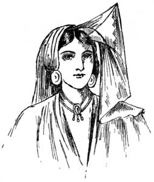
ii.6Holy Writ simply teems with allusions to the luxurious tresses of the fair daughters of the East, and there is little doubt that at an early period in the world's history women awakened to the fact that a well-tired head was a very potent attraction, and had a recognised market value. Jewish women were particularly famed in this respect, and employed female barbers, who, with the aid of crisping pins, horns, and towers, prepared their clients for conquest. These jewelled horns were generally made of the precious metals, and the position denoted the condition of the wearer. A married woman had it fixed on the right side of the head, a widow on the left, and she who was still an unappropriated blessing on the crown. Over the horn the veil was thrown coquettishly, as in the illustration. Assyrian women delighted in long ringlets, confined by a band of metal, and the men were not above the weakness of plaiting gold wire with their beards. Rimmel, in "The Book of Perfumes," relates a curious anecdote of Mausolus, King of Caria, who turned his people's fondness for flowing locks to account when his exchequer required replenishing. "Having first had a quantity of wigs made and stored in the royal warehouses, he published an edict compelling all his subjects to have their heads shaved. A few days after, the monarch's agents went round, offering them the perukes destined to cover their denuded polls, which they were delighted to buy at any price". It is not surprising that Artemisia could not console herself for the loss of such a clever husband, and that, not satisfied with drinking his ashes dissolved in wine, she spent some of her lamented lord's ill-gotten revenue in building such a monument to his memory that it was counted one of the wonders of the world.
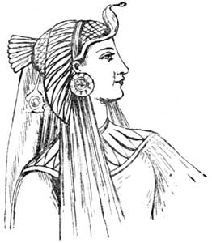
ii.8The Egyptians were also partial to wigs, some of which are still preserved in the British Museum. Ladies wore a multitude of small plaits and jewelled head-pieces resembling peacocks and other animals, which contrasted with their dark tresses with brilliant effect; or a fillet ornamented with a lotus bud. The coiffure of a princess was remarkable for its size and the abundance of animal, vegetable, and mineral treasures with which it was adorned. In Egyptian tombs and elsewhere have been discovered small wooden combs resembling the modern tooth-comb, and metal mirrors of precisely the same shape as those in use at the present day, as well as numerous other toilet appliances.
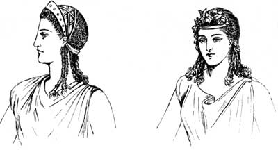
ii.10Grecian sculpture affords us the opportunity of studying the different modes in favour in that country, and it is astonishing to find what a variety of methods were adopted by the belles of ancient Greece for enhancing their charms. A loose knot, fastened by a clasp in the form of a grasshopper, was a favourite fashion. Cauls of network, metal mitres of different designs, and simple bands, and sometimes chaplets, of flowers, all confined at different periods, the luxuriant locks of the Helens, Penelopes, and Xantippes of ancient times.
ii.11[Illustration: ANCIENT ROMAN.]
ii.12It was a common custom among heathen nations to consecrate to their gods the hair when cut off, as well as that growing on the head, and it was either consumed on the altar, deposited in temples, or hung upon the trees. A famous instance of the consecration of hair is that of Berenice, the wife of Ptolemy Evergetes. It is related that when the king went on his expedition to Syria, she, solicitous for his safety, made a vow to consecrate her hair (which was remarkable for its fineness and beauty) to Venus, if he returned to her. When her husband came back she kept her word, and offered her hair in the temple of Cyprus. This was afterwards missing, when a report was spread that it had been turned into a constellation in the heavens, which constellation, an old writer tells us, is called _Coma Berenices_ (the hair of Berenice) to the present day. Another remarkable instance is that of Nero, who, according to Suetonius, cut off his first beard, put it in a casket of gold set with jewels, and consecrated it to Jupiter Capitolinus.
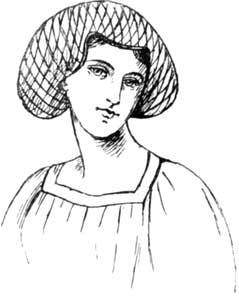
ii.14The hair of the head and beard appears to have been held in great respect by most nations, and perhaps we may trace the use of human hair in spells and incantations to this fact. Orientals especially treat the hair which falls from them with superstitious care, and bury it, so that no one shall use it to their prejudice.
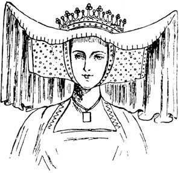
ii.16_From Effigy of Countess of Arundel in Arundel Church._]
ii.17Roman matrons generally preferred blonde hair to their own ebon tresses, and resorted to wigs and dye when Nature, as they considered, had treated them unkindly. Ovid rebukes a lady of his acquaintance in the plainest terms for having destroyed her hair.
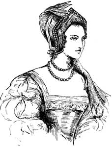
ii.19"Did I not tell you to leave off dyeing your hair? Now you have no hair left to dye: and yet nothing was handsomer than your locks: they came down to your knees, and were so fine that you were afraid to comb them. Your own hand has been the cause of the loss you deplore: you poured the poison on your own head. Now Germany will send you slaves' hair--a vanquished nation will supply your ornament. How many times, when you hear people praising the beauty of your hair, you will blush and say to yourself: 'It is bought ornament to which I owe my beauty, and I know not what Sicambrian virgin they are admiring in me. And yet there was a time when I deserved all these compliments.'"
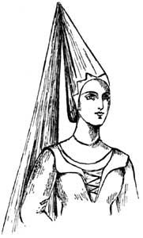
ii.21It would puzzle any _fin de siecle_ husband or brother to express his displeasure in more appropriate words than those chosen by the poet.
ii.22The Britons, before they mixed with other nations, were a fair-haired race, and early writers referred to their washing their auburn tresses in water boiled with lime to increase the reddish colour. Boadicea is described with flowing locks which fell upon her shoulders; but after the Roman Invasion the hair of both men and women followed the fashion of the conquerors.
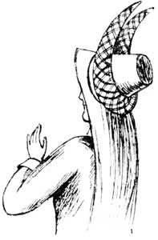
ii.24From Planche's "History of British Costume," we learn that "the female head-dress among all classes of the Anglo-Saxons was a long piece of linen or silk wrapped round the head and neck." It appears to have been called a head-rail, or wimple, but was dispensed with in the house, as the hair was then as cherished an ornament as at the present day. A wife described by Adhelm, Bishop of Sherborne, who wrote in the eighth century, is said to have had "twisted locks, delicately curled by the iron;" and in the poem of "Judith" the heroine is called "the maid of the Creator, with twisted locks." Two long plaits were worn by Norman ladies, and were probably adopted by our own countrywomen after the Conquest.
ii.25During the Middle Ages feminine head-gear underwent many changes. Golden nets, and linen bands closely pinned round the hair and chin, were followed by steeple-shaped erections and horned head-dresses in a variety of shapes, of which the accompanying sketches will give a better idea than any written description.
ii.26During the sixteenth century matrons adopted either a pointed hood, composed of velvet or other rich fabric, often edged with fur, a close-fitting coif, or the French cap to be seen in the portraits of the unhappy Mary Stuart. Those who were unmarried had their hair simply braided and embellished with knots of ribbon, strings of pearls, or Nature's most beautiful adornment for the maiden--sweet-scented flowers.
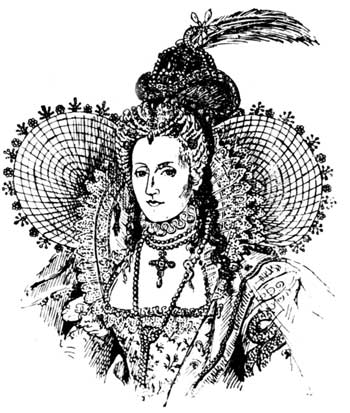
ii.28The auburn tresses of Her Gracious Majesty Queen Elizabeth, were always _bien coiffee_, if we may judge from her various portraits. She scorned the hoods, lace caps, and pointed coifs, worn by her contemporaries, and adopted a miniature crown or jaunty hat of velvet, elaborately jewelled. Her fair complexion and light hair were thrown into relief by ruffles of lace, and this delicate fabric was stretched over fine wire frames, which met at the back, and remotely suggested the fragile wings of the butterfly, or the nimbus of a saint, neither of which ornaments was particularly appropriate to the lady in question. The front hair was turned over a cushion, or dressed in stiff sausage-like curls, pinned close to the head, and was adorned with strings and stars of flashing gems and a pendant resting on the forehead.
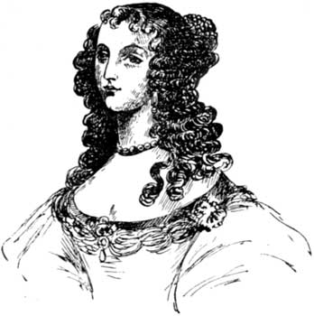
ii.30That splendid historian, Stubbs, who has left us such minute particulars of the fashions of his time, quaintly describes the coiffure of the ladies of the Court. He states: "It must be curled, frizzled, crisped, laid out in wreaths and borders from one ear to the other, and lest it should fall down, must be underpropped with forkes and weirs, and ornamented with gold or silver curiously wrought. Such gewgaws, which being unskilful in woman's tearms, I cannot easily recount. Then upon the toppes of their stately turrets, stand their other capital ornaments: a French hood, hatte, cappe, kircher and suchlike, whereof some be of velvet, some of this fashion and some of that. Cauls made of netwire, that the cloth of gold, silver, or tinsel, with which their hair was sometimes covered, might be seen through; and lattice caps with three horns or corners, like the forked caps of popish priests." The Harleian MSS., No. 1776, written in the middle of Elizabeth's reign, refers to an ordinance for the reformation of gentlewomen's head-dress, and says: "None shall wear an ermine or lattice bonnet unless she be a gentlewoman born, having Arms." This latter phrase, we may conclude, refers to armorial bearings, not to physical development.
ii.31The wearing of false hair and periwigs was left to the sterner sex for some years after the restoration of the House of Stuart, and women were satisfied with well-brushed ringlets escaping from a bandeau of pearls, or beautified by a single flower. The hair was often arranged in small, flat curls on the forehead, as in the sketch of a Beauty of the Court of Charles II.; and this fashion had a softening effect on the face, and was known as the "Sevigne style."
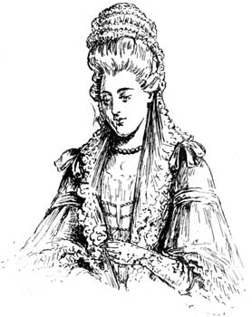
ii.33Dutch fashions naturally prevailed in the Court of William and Mary, and this queen is represented with a high muslin cap, adorned with a series of upright frills, edged with lace, and long lappets falling on the shoulders. Farquhar, in his comedy "Love and the Bottle," alludes to the "high top-knots," and Swift, to the "pinners edged with colberteen," as the lace streamers were called. About this period the hair was once again rolled back from the face, and assumed enormous dimensions, so much so, that in some cases it was found necessary to make doorways broader and higher than they had hitherto been, to allow fashionably-dressed ladies to pass through without displacing the elaborate erections they carried. Stuffed with horsehair, clotted with pomade and powder, and decked with every conceivable ornament, from a miniature man-of-war in full sail, to a cooing dove with outspread wings, presumably sitting on its nest, or a basket of flowers wreathed with ribbons. Naturally, the aid of the barber was called in, as ladies were incapable of constructing and manipulating such a mass of tangled locks. We may imagine, on the score of expense and for other reasons, the hair was not dressed so frequently as cleanliness demanded, for in a book on costume a hairdresser is described as asking one of his customers how long it was since her hair had been opened and repaired. On her replying, "Nine weeks," he mildly suggested that that was as long as a head could well go in summer, "and, therefore, it was proper to deliver it now, as it began to be a little _hazarde_." Various anecdotes of this nature make us feel that personal hygiene was a matter of secondary importance to our ancestors.
ii.34Planche, in his work on British Costume, informs us that powder maintained its ground till 1793, when it was discarded by Her Majesty Queen Charlotte, Consort of George III., and the Princesses.
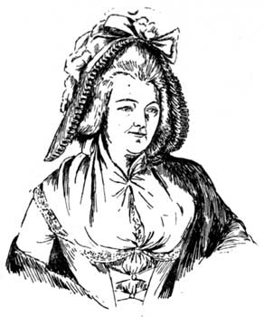
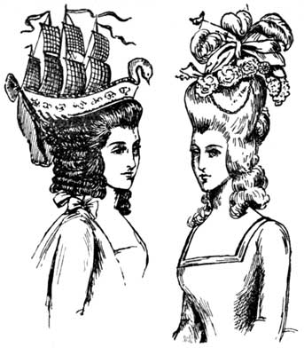
ii.37Varied, indeed, have been the fashions of the 19th century, the close of which is fast approaching. Only a few of the styles adopted can be briefly touched upon, and, naturally, those will be selected which form the greatest contrast to each other. The belle of 1830 was distinguished by upstanding bows of plain or plaited hair, arranged on the crown of the head, and the front was generally in bands or short ringlets, held in place by tortoise-shell side-combs. The simplicity of this coiffure was compensated for by the enormous size of the hats and bonnets generally worn with it. These had wide and curiously-shaped brims, over which was stretched or gathered silk, satin, aerophane, or similar materials. Garlands and bunches of flowers and feathers were used in profusion, and bows and strings of gauze ribbon floated in the wind. In this bewitching costume were our grandmothers wooed and won by suitors who evidently, from the impassioned love letters still in existence, believed them to be perfect types of loveliness.
ii.38Towards the middle of Queen Victoria's reign, the hair was dressed in a simple knot, and the front arranged in ringlets, which fell gracefully on the chest and shoulders. Even youthful married ladies, in the privacy of their homes and for morning dress, were expected, by one of those potent but unwritten laws of the fickle goddess Fashion, to wear muslin or net caps, with lace borders, embellished with ribbons.
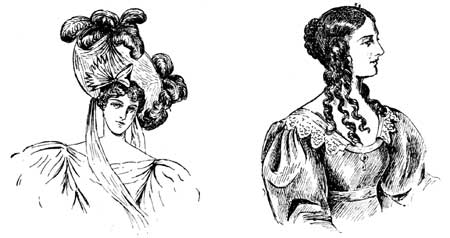
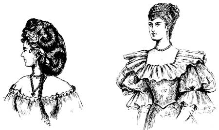
ii.42[Illustration: PRESENT DAY, 1894.]
ii.43The labours of Hercules would be mere child's play compared to giving a faithful record of the chameleon-like changes which have affected that kaleidoscope, public taste, during the last forty years, and a very limited study of this fascinating subject at once convinces us that, whatever peculiarities may appear, they are certain to be revivals or modifications of styles favoured by our more or less remote ancestors.
ii.44In 1872 loomed upon us that ghastly horror the chignon, which bore a faint resemblance to the exaggerated coiffures of the 18th century. Upon this monstrous edifice, with its seductive Alexandra curl, were tilted bonnets so minute that they were almost invisible in the mountains of hair that surrounded them. These were replaced by hats _a la Chinois_, like shallow plates; while for winter wear, others of fur or feathers were introduced, with an animal's head fixed firmly on the brow of the wearer, and resembling nothing so much as the fox foot-warmer, with which ladies now keep their pedal extremities at a proper temperature when enjoying an airing. Besides these, there were pinched canoes turned keel uppermost, and flexible mushrooms, which flapped and caught the wind till it was necessary to attach a string to the edge, to keep them snug and taut; such hats as Leech has immortalised in his sketches. Turbans and facsimiles of the delicious but indigestible pork-pie, Gainsborough, Rousby, and Langtry hats, all named after styles worn by their respective namesakes; and hats made of straw, leghorn, crinoline, lace, satin, and of silver and gold tissue, of every shape and size that fancy could devise, or the heart of the most exacting woman of fashion could desire. The hair beneath was dressed like the frizzy mop illustrated, in plaited wedges flowing like a pendant hump half-way down the back, or in a cascade of curls reaching from the crown of the head to the waist. These were followed by gigantic rolls at the back of the skull, Grecian knots, varying from the dimensions of a door handle to those of a cottage loaf, and latterly by that hideous monstrosity, the "bun." Another turn of the wheel of fashion has given us a simple mode of dressing the hair, which is well adapted to the average English head, and which is fully explained by the accompanying sketch. It may be taken as a safe rule, when the forehead is low and face small, that the hair may be drawn back with advantage, but a long face is generally improved by arranging the hair in soft curls on the forehead, and by waving it slightly at the sides, which adds to the apparent width of the countenance. But whatever style is in fashion, it is sure to have its admirers, for has not Pope left on record:
ii.45"Fair tresses man's imperial race ensnare, And beauty draws us by a single hair."